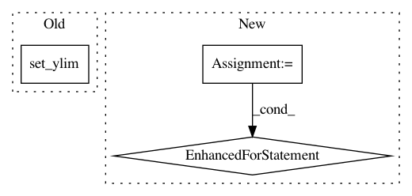

0ac7cecce4f147011037fcb79dfd57867b8329a8,nilmtk/metergroup.py,MeterGroup,plot_good_sections,#MeterGroup#Any#Any#Any#,1393
Before Change
label = ""
return label
ax.yaxis.set_major_formatter(FuncFormatter(y_formatter))
ax.set_ylim([0, n])
return ax
def sort_meters(self):
Sorts meters by instance.
After Change
meter_ids = [ElecMeterID(instance=meter_instance,
building=building_id.instance,
dataset=building_id.dataset)
for meter_instance in appliance.metadata["meters"]]
if appliance.n_meters == 1:
// Attach this appliance to just a single meter
meter = self[meter_ids[0]]
if isinstance(meter, MeterGroup): // MeterGroup of site_meters
metergroup = meter
for meter in metergroup.meters:
meter.appliances.append(appliance)
In pattern: SUPERPATTERN
Frequency: 3
Non-data size: 3
Instances
Project Name: nilmtk/nilmtk
Commit Name: 0ac7cecce4f147011037fcb79dfd57867b8329a8
Time: 2014-12-19
Author: jack-list@xlk.org.uk
File Name: nilmtk/metergroup.py
Class Name: MeterGroup
Method Name: plot_good_sections
Project Name: SheffieldML/GPy
Commit Name: 5cc17e87542da0ec1b41d3c159caeb22ac493cd2
Time: 2015-06-28
Author: z.dai@sheffield.ac.uk
File Name: GPy/plotting/matplot_dep/visualize.py
Class Name: mocap_data_show
Method Name: finalize_axes
Project Name: kymatio/kymatio
Commit Name: 4f1e7f2f936bf5f3e6d1da8d8be843dc3273fe67
Time: 2018-11-21
Author: janden@flatironinstitute.org
File Name: examples/1d/plot_filters.py
Class Name:
Method Name: